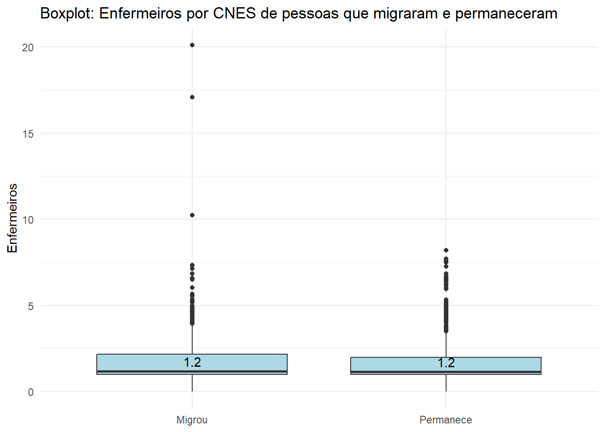
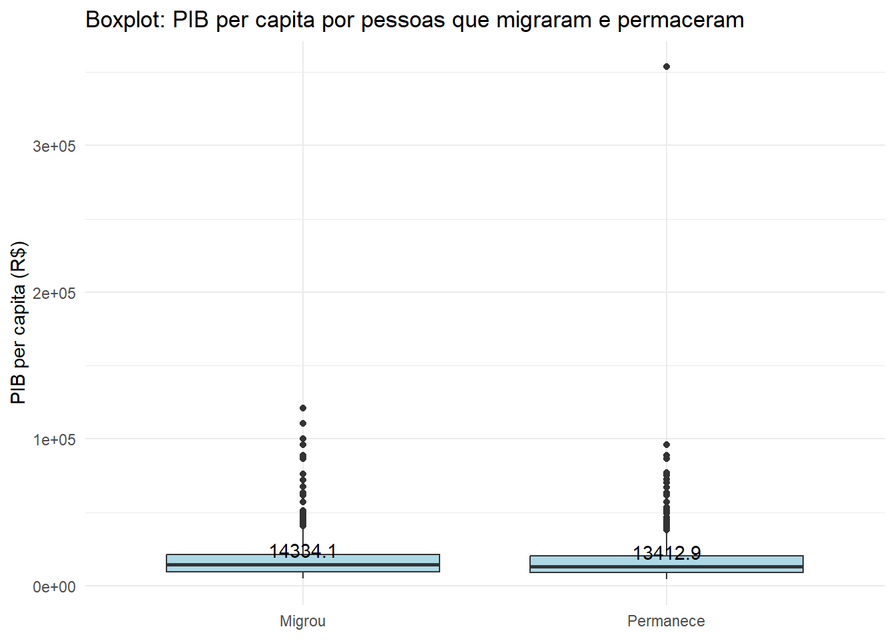
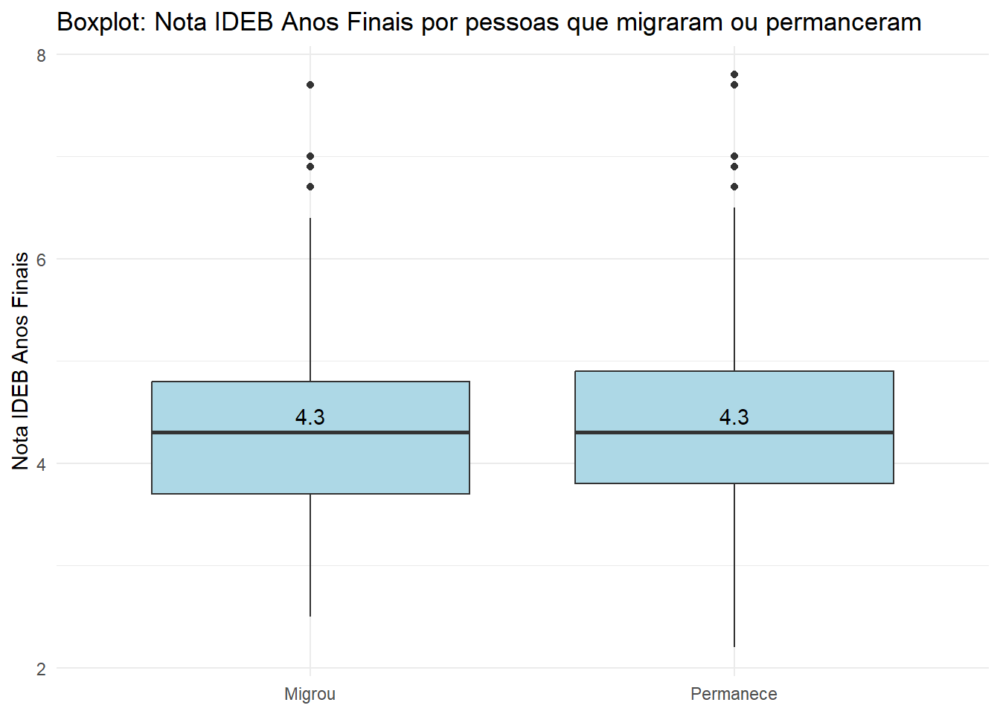

Análise exploratória de dados: Programa Mais Médicos para o Brasil (pmmb)
Análise Exploratória de Dados: Programa Mais Médicos para o Brasil (pmmb)
Nesse script será realizada a análise exploratória de dados da base tratada em outro script do Programa Mais Médicos para o Brasil (pmmb), afim de entender o comportamento das variáveis. Os dados são referentes aos médicos participantes do 18º Ciclo (EDITAL Nº 11, DE 10 DE MAIO DE 2019) do pmmb.
A análise será realizada seguindo as seguintes etapas:
Classificação e descrição das variáveis;
Medidas de tendência central;
Correlações entre as variáveis;
Diagrama de de fluxo (Sankey).
Assim, iniciaremos caracterizando as variáveis e examinando sua distribuição por meio de gráficos como boxplots e histogramas. Em seguida, realizaremos uma análise desagregada considerando o churn, ou seja, distinguindo entre médicos que permaneceram ou migraram, respeitando a estrututura de atributos relacionados ao indivíduo, estabelecimento e município. E por fim, o diagrama de Sankey para entender como os profissionais transitaram no território brasileiro por região no período de 4,5 anos após o início do programa.
Abaixo as bibliotecas que serão utilizadas.
#|warning: FALSElibrary(tidyverse)
Warning: package 'tidyverse' was built under R version 4.3.3
Warning: package 'ggplot2' was built under R version 4.3.3
Warning: package 'tibble' was built under R version 4.3.3
Warning: package 'tidyr' was built under R version 4.3.3
Warning: package 'readr' was built under R version 4.3.3
Warning: package 'purrr' was built under R version 4.3.3
Warning: package 'dplyr' was built under R version 4.3.3
Warning: package 'stringr' was built under R version 4.3.3
Warning: package 'forcats' was built under R version 4.3.3
Warning: package 'lubridate' was built under R version 4.3.3
── Attaching core tidyverse packages ──────────────────────── tidyverse 2.0.0 ──
✔ dplyr 1.1.4 ✔ readr 2.1.5
✔ forcats 1.0.0 ✔ stringr 1.5.1
✔ ggplot2 3.5.1 ✔ tibble 3.2.1
✔ lubridate 1.9.3 ✔ tidyr 1.3.1
✔ purrr 1.0.2
── Conflicts ────────────────────────────────────────── tidyverse_conflicts() ──
✖ dplyr::filter() masks stats::filter()
✖ dplyr::lag() masks stats::lag()
ℹ Use the conflicted package (<http://conflicted.r-lib.org/>) to force all conflicts to become errors
library(readxl)
Warning: package 'readxl' was built under R version 4.3.3
library(writexl)
Warning: package 'writexl' was built under R version 4.3.3
library(ggtext)
Warning: package 'ggtext' was built under R version 4.3.3
library(skimr)
Warning: package 'skimr' was built under R version 4.3.3
library(summarytools)
Warning: package 'summarytools' was built under R version 4.3.3
Attaching package: 'summarytools'
The following object is masked from 'package:tibble':
view
library(datawizard)
Warning: package 'datawizard' was built under R version 4.3.3
library(psych)
Warning: package 'psych' was built under R version 4.3.3
Attaching package: 'psych'
The following object is masked from 'package:datawizard':
rescale
The following objects are masked from 'package:ggplot2':
%+%, alpha
library(patchwork)
Warning: package 'patchwork' was built under R version 4.3.3
library(scales)
Warning: package 'scales' was built under R version 4.3.3
Attaching package: 'scales'
The following objects are masked from 'package:psych':
alpha, rescale
The following object is masked from 'package:datawizard':
rescale
The following object is masked from 'package:purrr':
discard
The following object is masked from 'package:readr':
col_factor
library(ggpubr)
Warning: package 'ggpubr' was built under R version 4.3.3
Attaching package: 'ggpubr'
The following objects are masked from 'package:datawizard':
mean_sd, median_mad
library(GGally)
Warning: package 'GGally' was built under R version 4.3.3
Registered S3 method overwritten by 'GGally':
method from
+.gg ggplot2
library(networkD3)
Warning: package 'networkD3' was built under R version 4.3.3
library(htmlwidgets)
Warning: package 'htmlwidgets' was built under R version 4.3.3
Attaching package: 'htmlwidgets'
The following object is masked from 'package:networkD3':
JS
library(plotly)
Warning: package 'plotly' was built under R version 4.3.3
Attaching package: 'plotly'
The following object is masked from 'package:ggplot2':
last_plot
The following object is masked from 'package:stats':
filter
The following object is masked from 'package:graphics':
layout
O código abaixo mostra quais as localidades em que os médicos foram destinados, primeiro por região e depois por unidade federativa. Os Estados do nordeste concentram a maior parte dos médicos participantes.
uf_destino <- data |>count(uf_destino, name ="total") |>mutate(percentual =round(total /sum(total) *100,2))uf_destino |>ggplot(aes(x =fct_reorder(uf_destino, percentual, .desc =FALSE), y = percentual)) +geom_col(fill ="lightblue",alpha =0.9) +coord_flip() +scale_y_continuous(expand =expansion(mult =c(0, 0.15))) +geom_text(aes(label =paste0(total," (",percentual, "%)")), hjust =-0.2) +labs(title ="Estado de destino",x =NULL, y =NULL) +theme_minimal()
2.1.4 Renovação
A variável renovação indica indica os médicos que tiveram a permanência no programa prorrogadas por mais um ano, totalizando 4 anos.
renovacao <- data |>count(Prorrogado, name ="total") |>mutate(percentual =round(total /sum(total) *100))renovacao |>ggplot(aes(x ="", y = percentual, fill = Prorrogado)) +geom_bar(stat ="identity", width =1) +coord_polar("y", start =0) +geom_text(aes(label =paste0(total," (",percentual, "%)")),position =position_stack(vjust =0.5)) +theme_void()
2.1.5 Churn
A variável churn como descrito anteriormente, indica quantos profissionais permaneceram nas cidades em que foram destinados e quantos migraram após um período de 4,5 anos. Observa-se também um balanceamento por churn, com 51% de retenção.
churn <- data |>count(churn, name ="total") |>mutate(percentual =round(total /sum(total) *100))churn |>ggplot(aes(x ="", y = percentual, fill = churn)) +geom_bar(stat ="identity", width =1) +coord_polar("y", start =0) +geom_text(aes(label =paste0(total," (",percentual, "%)")),position =position_stack(vjust =0.5)) +theme_void()
2.1.6 Anos de atuação no município antes do programa
Dentro os 190 médicos que já haviam atuado no município em que foram destinados, a mediana dos anos de atuação foi de 1,75.
descritiva_anos_atuacao <- data |>filter(atuacao_previa_no_municipio =="Sim") |>summarise( Mínimo =min(anos_atuacao_mesmo_municipio),Q1 =quantile(anos_atuacao_mesmo_municipio, 0.25, na.rm =TRUE),Mediana =median(anos_atuacao_mesmo_municipio, 0.5, na.rm =TRUE),Q3 =quantile(anos_atuacao_mesmo_municipio, 0.75, na.rm =TRUE), Máximo =max(anos_atuacao_mesmo_municipio) ) |>mutate(IQR = Q3 - Q1,Limite_inferior = Q1 -1.5* IQR,Limite_superior = Q3 +1.5* IQR ) |>select(-IQR) |>relocate(Limite_inferior, .before = Mínimo)outlier_anos_atuacao <- data |>filter(anos_atuacao_mesmo_municipio > descritiva_anos_atuacao$Limite_superior)data |>filter(atuacao_previa_no_municipio =="Sim") |>ggplot(aes(x = anos_atuacao_mesmo_municipio)) +geom_histogram(aes(y = ..count../sum(..count..)), bins =15, fill ="lightblue", color ="white", alpha =0.6) +geom_boxplot(aes(y =0.35),width =0.03,fill ="orange",outlier.color ="red" ) +geom_vline(xintercept = descritiva_anos_atuacao$Mediana, linetype ="dashed", color ="blue") +labs(title ="Boxplot e Histograma", x ="Anos de atuação prévia no município", y ="Densidade" ) +annotate("text", x = descritiva_anos_atuacao$Mediana, y =0.015,label = descritiva_anos_atuacao$Mediana, color ="blue", angle =90, vjust =-0.5, size =3.5) +theme_minimal()
Warning: The dot-dot notation (`..count..`) was deprecated in ggplot2 3.4.0.
ℹ Please use `after_stat(count)` instead.
2.1.7 Idade
Pelo código abaixo, observa-se que a mediana da idade dos participantes ao ingressar no programa foi de 32,4 anos.
descritiva_idade <- data |>summarise( Mínimo =min(idade_em_anos),Q1 =quantile(idade_em_anos, 0.25, na.rm =TRUE),Mediana =median(idade_em_anos),Q3 =quantile(idade_em_anos, 0.75, na.rm =TRUE), Máximo =max(idade_em_anos) ) |>mutate(IQR = Q3 - Q1,Limite_inferior = Q1 -1.5* IQR,Limite_superior = Q3 +1.5* IQR ) |>select(-IQR) |>relocate(Limite_inferior, .before = Mínimo)outlier_idade <- data |>filter(idade_em_anos > descritiva_idade$Limite_superior)data |>ggplot(aes(x = idade_em_anos)) +# Histogramageom_histogram(aes(y = ..count../sum(..count..)), bins =15, fill ="lightblue", color ="white", alpha =0.6) +scale_x_continuous(breaks =pretty_breaks(n =7)) +# Boxplotgeom_boxplot(aes(y =0.3), # Ajusta a posição para colocar no eixo ywidth =0.03, # Ajusta a altura do boxplotfill ="orange",outlier.color ="red" ) +geom_vline(xintercept = descritiva_idade$Mediana, linetype ="dashed", color ="blue") +annotate("text", x = descritiva_idade$Mediana, y =0.015,label =round(descritiva_idade$Mediana,1), color ="blue", angle =90, vjust =-0.5, size =3.5) +labs(title ="Boxplot e Histograma", x ="Idade", y ="Densidade" ) +theme_minimal()
2.1.7 Anos de formação
A referida variável denota os anos de formação que os médicos tinham ao ingressar no programa. Observa-se que, em geral, são de profissionais recém-formados com uma mediana de 1,7 anos.
Warning: Removed 11 rows containing non-finite outside the scale range
(`stat_bin()`).
Warning: Removed 11 rows containing non-finite outside the scale range
(`stat_boxplot()`).
2.3 Atributos a nível município
2.3.1 Porte da cidade
O porte dos município é classificado de acordo com sua população:
Pequeno Porte I: Até 20.000 habitantes.
Pequeno Porte II: Entre 20.000 e 50.000 habitantes.
Médio Porte: Entre 50.000 e 100.000 habitantes.
Grande Porte: Entre 100.000 e 900.000 habitantes.
Metrópole: Mais de 900.000 habitantes.
porte <- data |>count(porte, name ="total") |>mutate(percentual =round(total /sum(total) *100,2)) |>mutate(porte =case_when(porte =="PP-I"~"Pequeno porte 1", porte =="PP-II"~"Pequeno porte 2", porte =="MP"~"Médio porte", porte =="GP"~"Grande porte",TRUE~ porte))porte |>ggplot(aes(x =fct_reorder(porte, percentual, .desc =FALSE), y = percentual)) +geom_col(fill ="lightblue",alpha =0.9) +coord_flip() +scale_y_continuous(expand =expansion(mult =c(0, 0.25))) +geom_text(aes(label =paste0(total," (",percentual, "%)")), hjust =-0.2) +labs(title ="Porte do município",x =NULL, y =NULL) +theme_minimal()
2.3.2 Produto Interno Bruto (PIB) per capita (R$)
A mediana do PIB per capita dos municípios que receberam médicos do programa foi de R$ 15.519,00
O código abaixo mostra o percentual de médicos que permaneceram nas cidades em que foram designados desagregado por sexo, isto é, a retenção. No entanto, a falta de significância estatística no teste fisher, indica que não há associação entre as variáveis sexo e churn.
Fisher's Exact Test for Count Data
data: corr_sexo_churn[, c("migrou", "permanece")]
p-value = 0.2983
alternative hypothesis: true odds ratio is not equal to 1
95 percent confidence interval:
0.7380165 1.0991304
sample estimates:
odds ratio
0.9007211
A seguir, é observada a retenção de acordo com profissionais que prorrogaram a permanência no programa conforme edital. A retenção de médicos foi maior entre aqueles que não renovaram a permanência do programa com 71%, em comparação aos que renovaram, que apenas 21% permanceram após 4,5 anos.
Fisher's Exact Test for Count Data
data: corr_renovacao_churn[, c("migrou", "permanece")]
p-value < 2.2e-16
alternative hypothesis: true odds ratio is not equal to 1
95 percent confidence interval:
0.08392017 0.13530482
sample estimates:
odds ratio
0.1068306
Abaixo, é gerado boxplot da médica de vínculos desagregado pelo churn (retenção). É aplicado o teste de distribuição de probalidade Shapiro-Wilk no qual o p valor significativo indica que não segue normalidade. E dado a não normalidade dos dados, é aplicado o teste de Mann-Whitney para comparar duas amostras (migrou e permance), e o p-valor significativo indica diferença estatística.
data |>mutate(churn =ifelse(churn =="migrou", "Migrou", "Permanece")) |>ggplot(aes(x = churn, y = media_vinculos)) +geom_boxplot(fill ="lightblue") +stat_summary(fun = median, geom ="text", aes(label =round(..y.., 1)),vjust =-0.5, color ="black" ) +labs(title ="Boxplot: Média de vínculos de pessoas migraram e permanceram",x =NULL,y ="Idade") +theme_minimal()
shapiro.test(data$media_vinculos)
Shapiro-Wilk normality test
data: data$media_vinculos
W = 0.48619, p-value < 2.2e-16
wilcox.test(media_vinculos ~ churn, data = data, alternative ="two.sided")
Wilcoxon rank sum test with continuity correction
data: media_vinculos by churn
W = 398951, p-value = 5.097e-15
alternative hypothesis: true location shift is not equal to 0
A seguir é gerado boxplot para idade dos médicos desagregado pelo churn. O teste de Shapiro-Wilk indica não normalidade da distribuição, e o teste Mann-Whitney aponta para diferença estatística entre os dois grupos (migrou e permanece). Observa-se que médicos que permaneceram são mais jovens comparado aos que migraram.
data |>mutate(churn =ifelse(churn =="migrou", "Migrou", "Permanece")) |>ggplot(aes(x = churn, y = idade_em_anos)) +geom_boxplot(fill ="lightblue") +stat_summary(fun = median, geom ="text", aes(label =round(..y.., 1)),vjust =-0.5, color ="black" ) +labs(title ="Boxplot: Idade de pessoas migraram e permanceram",x =NULL,y ="Idade") +theme_minimal()
shapiro.test(data$idade_em_anos)
Shapiro-Wilk normality test
data: data$idade_em_anos
W = 0.84861, p-value < 2.2e-16
wilcox.test(idade_em_anos ~ churn, data = data, alternative ="two.sided")
Wilcoxon rank sum test with continuity correction
data: idade_em_anos by churn
W = 449375, p-value < 2.2e-16
alternative hypothesis: true location shift is not equal to 0
Seguindo a mesma lógica da idade, é gerado boxplot desagregado por churn dos anos de formação ao ingressar no programa. O teste Shapiro-Wilk indica não normalidade, e o Mann-Whitney aponta diferença estatística. Os resultados mostram que os médicos que permaneceram tem menos anos de formação do que os que migraram.
data |>mutate(churn =ifelse(churn =="migrou", "Migrou", "Permanece")) |>ggplot(aes(x = churn, y = anos_formacao)) +geom_boxplot(fill ="lightblue") +stat_summary(fun = median, geom ="text", aes(label =round(..y.., 1)),vjust =-0.5, color ="black" ) +labs(title ="Boxplot: Anos de formação por pessoas migraram e permaneceram",x =NULL,y ="Idade") +theme_minimal()
shapiro.test(data$anos_formacao)
Shapiro-Wilk normality test
data: data$anos_formacao
W = 0.57899, p-value < 2.2e-16
wilcox.test(anos_formacao ~ churn, data = data, alternative ="two.sided")
Wilcoxon rank sum test with continuity correction
data: anos_formacao by churn
W = 401201, p-value = 1.005e-10
alternative hypothesis: true location shift is not equal to 0
Em consonância com os resultados anteriores, há uma correlação significativa entre a idade e os anos de formação dos médicos participantes que é demonstrado visualmente pelo gráfico de dispersão, e estatísticamente pelo teste de correlação com o método de pearson.
data |>ggplot(aes(x = idade_em_anos, y = anos_formacao)) +geom_point() +stat_cor(method ="pearson") +labs(title ="Gráfico de dispersão da idade e anos de formação",x ="Idade",y ="Anos de formação") +theme_bw()
3.2 Atributos a nível estabelecimento
Na função abaixo, é gerada uma uma matriz de correlações entre as variáveis de profissionais por estabelecimento, e com o número de leitos. Observa-se que houve significância entre todas as variáveis, entre as maiores, de técnico e auxiliar de enfermagem e enfermeiros considerando profissionais, e número de leitos com enfermeiros.
Warning: Removed 11 rows containing missing values or values outside the scale range
(`geom_point()`).
Removed 11 rows containing missing values or values outside the scale range
(`geom_point()`).
Removed 11 rows containing missing values or values outside the scale range
(`geom_point()`).
Removed 11 rows containing missing values or values outside the scale range
(`geom_point()`).
Warning: Removed 11 rows containing non-finite outside the scale range
(`stat_density()`).
A seguir é gerado boxplot do número de agentes de saúde por estabelecimento desagregado pelo churn. Os testes Shapiro-Wilk e Wenn-Whitiney indicaram, respectivamente, não normalidade e diferença estatística significativa entre os dois grupos. O número de agentes de saúde de estabelecimento em que médicos não permaneram, ligeiramente maior em comparação aos estabelecimentos de profissionais que permaneceram.
data |>distinct(cnes, agente_saude, churn) |>mutate(churn =ifelse(churn =="migrou", "Migrou", "Permanece")) |>ggplot(aes(x = churn, y = agente_saude)) +geom_boxplot(fill ="lightblue") +stat_summary(fun = median, geom ="text", aes(label =round(..y.., 1)),vjust =-0.5, color ="black" ) +labs(title ="Boxplot: Agentes de Saúde de pessoas por CNES que migraram e permaneceram",x =NULL,y ="Agentes Comunitários de Saúde") +theme_minimal()
distinct_agente_saude <- data |>distinct(agente_saude, churn, cnes)shapiro.test(distinct_agente_saude$agente_saude)
Shapiro-Wilk normality test
data: distinct_agente_saude$agente_saude
W = 0.73374, p-value < 2.2e-16
wilcox.test(agente_saude ~ churn, data = distinct_agente_saude, alternative ="two.sided")
Wilcoxon rank sum test with continuity correction
data: agente_saude by churn
W = 343625, p-value = 0.03797
alternative hypothesis: true location shift is not equal to 0
Na mesma lógica anterior, dos agentes de saúde, é realizado com técnico e auxiliares de enfermagem. Os testes indicam não normalidade e diferença estatística não significativa, indicando, que o número de profissionais por estabelecimento de profissionais que migraram e permaneceram são iguais.
data |>distinct(tec_aux_enf, churn, cnes) |>mutate(churn =ifelse(churn =="migrou", "Migrou", "Permanece")) |>ggplot(aes(x = churn, y = tec_aux_enf)) +geom_boxplot(fill ="lightblue") +stat_summary(fun = median, geom ="text", aes(label =round(..y.., 1)),vjust =-0.5, color ="black" ) +labs(title ="Boxplot: Tec. e Aux. de Enfermagem por CNES de pessoas que migraram e permaneceram",x =NULL,y ="Técnicos e Auxiliares de Enfermagem") +theme_minimal()
distinct_tec_aux_enf <- data |>distinct(tec_aux_enf, churn, cnes)shapiro.test(distinct_tec_aux_enf$tec_aux_enf)
Shapiro-Wilk normality test
data: distinct_tec_aux_enf$tec_aux_enf
W = 0.65769, p-value < 2.2e-16
wilcox.test(tec_aux_enf ~ churn, data = data, alternative ="two.sided")
Wilcoxon rank sum test with continuity correction
data: tec_aux_enf by churn
W = 351086, p-value = 0.2068
alternative hypothesis: true location shift is not equal to 0
Os resultados de enfermeiros são semelhantes dos de técnico e auxiliar de enfermagem, não seguem distribuição normal, e não apresenta diferença estatística significativa no comparativo de estabelecimentos com profissionais que migraram ou permaneceram.
data |>distinct(enfermeiro, churn, cnes) |>mutate(churn =ifelse(churn =="migrou", "Migrou", "Permanece")) |>ggplot(aes(x = churn, y = enfermeiro)) +geom_boxplot(fill ="lightblue") +stat_summary(fun = median, geom ="text", aes(label =round(..y.., 1)),vjust =-0.5, color ="black" ) +labs(title ="Boxplot: Enfermeiros por CNES de pessoas que migraram e permaneceram",x =NULL,y ="Enfermeiros") +theme_minimal()
distinct_enfermeiros <- data |>distinct(enfermeiro, churn, cnes)shapiro.test(distinct_enfermeiros$enfermeiro)
Shapiro-Wilk normality test
data: distinct_enfermeiros$enfermeiro
W = 0.60953, p-value < 2.2e-16
wilcox.test(enfermeiro ~ churn, data = distinct_enfermeiros, alternative ="two.sided")
Wilcoxon rank sum test with continuity correction
data: enfermeiro by churn
W = 338268, p-value = 0.1259
alternative hypothesis: true location shift is not equal to 0
Assim como técnicos e auxiliares de enfermagem e enfermeiros, o número de dentistas não segue distribuição normal e não apresenta diferença significativa entre estabelecimentos que tiveram profissionais que permaneceram e migraram.
data |>distinct(dentista, churn, cnes) |>mutate(churn =ifelse(churn =="migrou", "Migrou", "Permanece")) |>ggplot(aes(x = churn, y = dentista)) +geom_boxplot(fill ="lightblue") +stat_summary(fun = median, geom ="text", aes(label =round(..y.., 1)),vjust =-0.5, color ="black" ) +labs(title ="Boxplot: Cirurgiões-dentistas por CNES de pessoas que migraram e permaneceram",x =NULL,y ="Técnicos e Auxiliares de Enfermagem") +theme_minimal()

distinct_dentista <- data |>distinct(dentista, churn, cnes)shapiro.test(distinct_dentista$dentista)
Shapiro-Wilk normality test
data: distinct_dentista$dentista
W = 0.77827, p-value < 2.2e-16
wilcox.test(dentista ~ churn, data = distinct_dentista, alternative ="two.sided")
Wilcoxon rank sum test with continuity correction
data: dentista by churn
W = 327341, p-value = 0.7259
alternative hypothesis: true location shift is not equal to 0
A seguir, boxplot de número de leitos desagregado pelo churn. O teste Shapiro-Wilk indica que a variável não segue distribuição normal, e o teste Wenn-Whetney aponta que não há diferença significativa. O resultado mostra que o número de leitos por estabelecimento de profissionais que permaneceram e migraram são iguais.
data |>distinct(leitos_instalacao_fisica_urgencia, churn, cnes) |>mutate(churn =ifelse(churn =="migrou", "Migrou", "Permanece")) |>ggplot(aes(x = churn, y = leitos_instalacao_fisica_urgencia)) +geom_boxplot(fill ="lightblue") +stat_summary(fun = median, geom ="text", aes(label =round(..y.., 1)),vjust =-0.5, color ="black" ) +labs(title ="Boxplot: Leitos por CNES de pessoas que migaram e permanceram",x =NULL,y ="Técnicos e Auxiliares de Enfermagem") +theme_minimal()
Warning: Removed 11 rows containing non-finite outside the scale range
(`stat_boxplot()`).
Warning: Removed 11 rows containing non-finite outside the scale range
(`stat_summary()`).
distinct_leitos <- data |>distinct(leitos_instalacao_fisica_urgencia, churn, cnes)shapiro.test(distinct_leitos$leitos_instalacao_fisica_urgencia)
Shapiro-Wilk normality test
data: distinct_leitos$leitos_instalacao_fisica_urgencia
W = 0.914, p-value < 2.2e-16
wilcox.test(leitos_instalacao_fisica_urgencia ~ churn, data = distinct_leitos, alternative ="two.sided")
Wilcoxon rank sum test with continuity correction
data: leitos_instalacao_fisica_urgencia by churn
W = 320458, p-value = 0.9444
alternative hypothesis: true location shift is not equal to 0
3.3 Atributos a nível município
Abaixo é calculado a retenção de profissionais desagregado por região do país. O teste de fisher indica diferença estatística entre as localidades, muito destacada pela região norte que apresenta um desvio expressivo em relação as outras.
corr_regiao_churn <- data |>group_by(regiao_destino, churn) |>count() |>pivot_wider(names_from = churn, values_from = n) |>mutate(retencao =round(permanece / (migrou + permanece) *100,0))corr_regiao_churn |>ggplot(aes(x =fct_reorder(regiao_destino, retencao, .desc =FALSE), y = retencao)) +geom_col(fill ="lightblue",alpha =0.9) +coord_flip() +scale_y_continuous(expand =expansion(mult =c(0, 0.15))) +geom_text(aes(label =paste0(retencao, "%")), hjust =-0.2) +labs(title ="Taxa de retenção por região",x =NULL, y =NULL) +theme_minimal()
Fisher's Exact Test for Count Data with simulated p-value (based on
2000 replicates)
data: corr_regiao_churn[, c("migrou", "permanece")]
p-value = 0.0004998
alternative hypothesis: two.sided
Na mesma lógica da retenção por região, abaixo é calculado por unidade federativa. Os resultados mostram Tocantins e Sergipe como melhores resultados de permanência de médicos nas cidades de destino, no entanto, os resultados devem ser olhados com ceticismo já que são estados que receberam poucos médicos, e em especial, Tocantins que recebeu apenas 15 profissionais.
Fisher's Exact Test for Count Data with simulated p-value (based on
2000 replicates)
data: corr_uf_churn[, c("migrou", "permanece")]
p-value = 0.0004998
alternative hypothesis: two.sided
Ressaltando os critérios de classificação de porte dos municípios:
Pequeno Porte I: Até 20.000 habitantes.
Pequeno Porte II: Entre 20.000 e 50.000 habitantes.
Médio Porte: Entre 50.000 e 100.000 habitantes.
Grande Porte: Entre 100.000 e 900.000 habitantes.
Metrópole: Mais de 900.000 habitantes.
A seguir é calculada a retenção desagredada por porte da cidade. A não significância estatística do teste de fisher indica que não há associação entre o porte e o churn.
corr_porte_churn <- data |>group_by(porte, churn) |>count() |>pivot_wider(names_from = churn, values_from = n) |>mutate(retencao =round(permanece / (migrou + permanece) *100,0)) |>mutate(porte =case_when(porte =="PP-I"~"Pequeno porte 1", porte =="PP-II"~"Pequeno porte 2", porte =="MP"~"Médio porte", porte =="GP"~"Grande porte",TRUE~ porte))corr_porte_churn |>ggplot(aes(x =fct_reorder(porte, retencao, .desc =FALSE), y = retencao)) +geom_col(fill ="lightblue",alpha =0.9) +coord_flip() +scale_y_continuous(expand =expansion(mult =c(0, 0.15))) +geom_text(aes(label =paste0(retencao, "%")), hjust =-0.2) +labs(title ="Taxa de retenção por porte do município",x =NULL, y =NULL) +theme_minimal()
Fisher's Exact Test for Count Data with simulated p-value (based on
2000 replicates)
data: corr_porte_churn[, c("migrou", "permanece")]
p-value = 0.0004998
alternative hypothesis: two.sided
Abaixo, o boxplot do PIB per capita desagregado pelo churn. Os testes indicam não normalidade na distribuição de probabilidade e diferença não significativa entre os médicos que permaneceram e que migraram. Os resultados mostram que o PIB per capita da cidade não é um determinante para retenção dos médicos, no entanto, deve ser analisado com o ceticismo por não se tratar de uma variável aleatória, dado que os profissionais que selecionam as cidades que desejam ir, tratando dessa forma de um viés.
data |>mutate(churn =ifelse(churn =="migrou", "Migrou", "Permanece")) |>ggplot(aes(x = churn, y = pib_percapita)) +geom_boxplot(fill ="lightblue") +stat_summary(fun = median, geom ="text", aes(label =round(..y.., 1)),vjust =-0.5, color ="black" ) +labs(title ="Boxplot: PIB per capita por pessoas que migraram e permaceram",x =NULL,y ="PIB per capita (R$)") +theme_minimal()
distinct_pib <- data |>distinct(ibge_aloc, pib_percapita, churn)shapiro.test(distinct_pib$pib_percapita)
Shapiro-Wilk normality test
data: distinct_pib$pib_percapita
W = 0.52871, p-value < 2.2e-16
wilcox.test(pib_percapita ~ churn, data = distinct_pib, alternative ="two.sided")
Wilcoxon rank sum test with continuity correction
data: pib_percapita by churn
W = 162131, p-value = 0.8318
alternative hypothesis: true location shift is not equal to 0
A seguir, o boxplot da taxa de ocupação do municipio desagregado por churn. O teste Shapiro-Walk indica não normalidade na distribruição de probabilidade, e o Wenn-Whitney aponta que não há diferença estatística significativa entre os profissionais que migraram e permanaceram.
data |>mutate(churn =ifelse(churn =="migrou", "Migrou", "Permanece")) |>ggplot(aes(x = churn, y = tx_pop_ocupada*100)) +geom_boxplot(fill ="lightblue") +stat_summary(fun = median, geom ="text", aes(label =round(..y.., 1)),vjust =-0.5, color ="black" ) +labs(title ="Boxplot: taxa de ocupação por pessoas que migraram ou permanceram",x =NULL,y ="Taxa de ocupação (%)") +theme_minimal()

shapiro.test(data$tx_pop_ocupada)
Shapiro-Wilk normality test
data: data$tx_pop_ocupada
W = 0.88162, p-value < 2.2e-16
wilcox.test(tx_pop_ocupada ~ churn, data = data, alternative ="two.sided")
Wilcoxon rank sum test with continuity correction
data: tx_pop_ocupada by churn
W = 353723, p-value = 0.1251
alternative hypothesis: true location shift is not equal to 0
No código abaixo, o boxplot do número de vagas em curso de medicina por município desagregado por churn. Os testes indicam não normalidade da distribuição de probabilidade e diferença estatística significativa entre o número de vagas em municípios em que os médicos permaneceram e migraram.
data |>ggplot(aes(x = churn, y = vagas_medicina_milhab)) +geom_boxplot(fill ="lightblue") +stat_summary(fun = median, geom ="text", aes(label =round(..y.., 1)),vjust =-0.5, color ="black" ) +labs(title ="Boxplot: Vagas de medicina por pessoas que migraram ou permanceram",x =NULL,y ="Vagas de medicina") +theme_minimal()
shapiro.test(data$vagas_medicina_milhab)
Shapiro-Wilk normality test
data: data$vagas_medicina_milhab
W = 0.36698, p-value < 2.2e-16
wilcox.test(vagas_medicina_milhab ~ churn, data = data, alternative ="two.sided")
Wilcoxon rank sum test with continuity correction
data: vagas_medicina_milhab by churn
W = 358322, p-value = 0.001353
alternative hypothesis: true location shift is not equal to 0
Abaixo o boxplot dos gastos públicos com saúde desagregado pelo churn. Os testes indicam não normalidade na distribuição de probabilidade e diferença estatística não significativa entre os municípios que tiveram profissionais que migraram e permaneceram.
data |>ggplot(aes(x = churn, y = orcamento_saude)) +geom_boxplot(fill ="lightblue") +stat_summary(fun = median, geom ="text", aes(label =round(..y.., 1)),vjust =-0.5, color ="black" ) +labs(title ="Boxplot: orçamento de saúde per capita por pessoas que migraram ou permanceram",x ="Renovação",y ="Orçamendo de saúde per capita") +theme_minimal()
shapiro.test(data$orcamento_saude)
Shapiro-Wilk normality test
data: data$orcamento_saude
W = 0.73337, p-value < 2.2e-16
wilcox.test(orcamento_saude ~ churn, data = data, alternative ="two.sided")
Wilcoxon rank sum test with continuity correction
data: orcamento_saude by churn
W = 329935, p-value = 0.3516
alternative hypothesis: true location shift is not equal to 0
Abaixo o boxplot da cobertura populacional com esgoto sanitário desagregado pelo churn. Os testes indicam não normalidade na distribuição de probabilidade e diferença estatística não significativa entre os municípios que tiveram profissionais que migraram e permaneceram.
data |>mutate(churn =ifelse(churn =="migrou", "Migrou", "Permanece")) |>ggplot(aes(x = churn, y = esgotamento_sanitario)) +geom_boxplot(fill ="lightblue") +stat_summary(fun = median, geom ="text", aes(label =round(..y.., 1)),vjust =-0.5, color ="black" ) +labs(title ="Boxplot: esgotamento sanitário por pessoas que migraram e permanceram",x =NULL,y ="População com esgoto sanitário (%)") +theme_minimal()
shapiro.test(data$esgotamento_sanitario)
Shapiro-Wilk normality test
data: data$esgotamento_sanitario
W = 0.78961, p-value < 2.2e-16
wilcox.test(esgotamento_sanitario ~ churn, data = data, alternative ="two.sided")
Wilcoxon rank sum test with continuity correction
data: esgotamento_sanitario by churn
W = 344103, p-value = 0.5764
alternative hypothesis: true location shift is not equal to 0
Abaixo o boxplot da taxa de homício dos municípios desagregado pelo churn. Os testes indicam não normalidade na distribuição de probabilidade e diferença estatística não significativa entre os municípios que tiveram profissionais que migraram e permaneceram.
data |>mutate(churn =ifelse(churn =="migrou", "Migrou", "Permanece")) |>ggplot(aes(x = churn, y = taxa_homicidio)) +geom_boxplot(fill ="lightblue") +stat_summary(fun = median, geom ="text", aes(label =round(..y.., 1)), vjust =-0.5, color ="black" ) +labs(title ="Boxplot: taxa de homicídio por pessoas que migraram e permanceram",x =NULL,y ="Taxa de homicídio por 100 mil hab.") +theme_minimal()
shapiro.test(data$taxa_homicidio)
Shapiro-Wilk normality test
data: data$taxa_homicidio
W = 0.88974, p-value < 2.2e-16
wilcox.test(taxa_homicidio ~ churn, data = data, alternative ="two.sided")
Wilcoxon rank sum test with continuity correction
data: taxa_homicidio by churn
W = 357683, p-value = 0.05176
alternative hypothesis: true location shift is not equal to 0
Abaixo o boxplot da nota do IDEB anos iniciais dos municípios desagregado pelo churn. Os testes indicam não normalidade na distribuição de probabilidade e diferença estatística significativa entre os municípios que tiveram profissionais que migraram e permaneceram. Os resultados mostram que a nota ideb dos municípios com maior grau de retenção tem são ligeiramente maior.
data |>mutate(churn =ifelse(churn =="migrou", "Migrou", "Permanece")) |>ggplot(aes(x = churn, y = ideb_anosiniciais)) +geom_boxplot(fill ="lightblue") +stat_summary(fun = median, geom ="text", aes(label =round(..y.., 1)),vjust =-0.5, color ="black" ) +labs(title ="Boxplot: Nota IDEB Anos Iniciais por pessoas que migraram ou permanceram",x =NULL,y ="Nota IDEB Anos Iniciais") +theme_minimal()
Warning: Removed 26 rows containing non-finite outside the scale range
(`stat_boxplot()`).
Warning: Removed 26 rows containing non-finite outside the scale range
(`stat_summary()`).
shapiro.test(data$ideb_anosfinais)
Shapiro-Wilk normality test
data: data$ideb_anosfinais
W = 0.97029, p-value = 5.421e-16
wilcox.test(ideb_anosiniciais ~ churn, data = data, alternative ="two.sided")
Wilcoxon rank sum test with continuity correction
data: ideb_anosiniciais by churn
W = 309423, p-value = 0.04495
alternative hypothesis: true location shift is not equal to 0
Abaixo o boxplot da nota do IDEB anos finais dos municípios desagregado pelo churn. Os testes indicam não normalidade na distribuição de probabilidade e diferença estatística não significativa entre os municípios que tiveram profissionais que migraram e permaneceram.
data |>mutate(churn =ifelse(churn =="migrou", "Migrou", "Permanece")) |>ggplot(aes(x = churn, y = ideb_anosfinais)) +geom_boxplot(fill ="lightblue") +stat_summary(fun = median, geom ="text", aes(label =round(..y.., 1)),vjust =-0.5, color ="black" ) +labs(title ="Boxplot: Nota IDEB Anos Finais por pessoas que migraram ou permanceram",x =NULL,y ="Nota IDEB Anos Finais") +theme_minimal()
Warning: Removed 304 rows containing non-finite outside the scale range
(`stat_boxplot()`).
Warning: Removed 304 rows containing non-finite outside the scale range
(`stat_summary()`).
shapiro.test(data$ideb_anosfinais)
Shapiro-Wilk normality test
data: data$ideb_anosfinais
W = 0.97029, p-value = 5.421e-16
wilcox.test(ideb_anosfinais ~ churn, data = data, alternative ="two.sided")
Wilcoxon rank sum test with continuity correction
data: ideb_anosfinais by churn
W = 218355, p-value = 0.3174
alternative hypothesis: true location shift is not equal to 0
Abaixo o boxplot do número de equipamentos esportivos dos municípios desagregado pelo churn. Os testes indicam não normalidade na distribuição de probabilidade e diferença estatística significativa entre os municípios que tiveram profissionais que migraram e permaneceram. Os resultados mostram que os municípios com maior grau de retenção tem infraestrutura esportiva maior.
data |>mutate(churn =ifelse(churn =="migrou", "Migrou", "Permanece")) |>ggplot(aes(x = churn, y = investimento_infraestrutura)) +geom_boxplot(fill ="lightblue") +stat_summary(fun = median, geom ="text", aes(label =round(..y.., 1)),vjust =-0.5, color ="black" ) +labs(title ="Boxplot: Equipamentos esportivos por mil hab por pessoas que migraram ou permanceram",x =NULL,y ="Equipamentos esportivos por mil hab") +theme_minimal()

shapiro.test(data$investimento_infraestrutura)
Shapiro-Wilk normality test
data: data$investimento_infraestrutura
W = 0.83751, p-value < 2.2e-16
wilcox.test(investimento_infraestrutura ~ churn, data = data, alternative ="two.sided")
Wilcoxon rank sum test with continuity correction
data: investimento_infraestrutura by churn
W = 314331, p-value = 0.01081
alternative hypothesis: true location shift is not equal to 0
Abaixo o boxplot do número de espaços culturais dos municípios desagregado pelo churn. Os testes indicam não normalidade na distribuição de probabilidade e diferença estatística significativa entre os municípios que tiveram profissionais que migraram e permaneceram. Os resultados mostram que os municípios com maior grau de retenção tem maior infraestrutura cultural.
data |>mutate(churn =ifelse(churn =="migrou", "Migrou", "Permanece")) |>ggplot(aes(x = churn, y = equpamentos_culturais)) +geom_boxplot(fill ="lightblue") +stat_summary(fun = median, geom ="text", aes(label =round(..y.., 1)),vjust =-0.5, color ="black" ) +labs(title ="Boxplot: Equipamentos culturais por mil hab. por pessoas que migraram ou permanceram",x =NULL,y ="Equipamentos culturais por mil hab.") +theme_minimal()
shapiro.test(data$equpamentos_culturais)
Shapiro-Wilk normality test
data: data$equpamentos_culturais
W = 0.63378, p-value < 2.2e-16
wilcox.test(equpamentos_culturais ~ churn, data = data, alternative ="two.sided")
Wilcoxon rank sum test with continuity correction
data: equpamentos_culturais by churn
W = 308080, p-value = 0.001388
alternative hypothesis: true location shift is not equal to 0
Abaixo o boxplot da distância da capital em km dos municípios desagregado pelo churn. Os testes indicam não normalidade na distribuição de probabilidade e diferença estatística não significativa entre os municípios que tiveram profissionais que migraram e permaneceram.
data |>mutate(churn =ifelse(churn =="migrou", "Migrou", "Permanece")) |>ggplot(aes(x = churn, y = distancia_capital)) +geom_boxplot(fill ="lightblue") +stat_summary(fun = median, geom ="text", aes(label =round(..y.., 1)),vjust =-0.5, color ="black" ) +labs(title ="Boxplot: Distância da capital por pessoas que migraram ou permanceram",x =NULL,y ="Distância da capital (km)") +theme_minimal()
shapiro.test(data$distancia_capital)
Shapiro-Wilk normality test
data: data$distancia_capital
W = 0.90337, p-value < 2.2e-16
wilcox.test(distancia_capital ~ churn, data = data, alternative ="two.sided")
Wilcoxon rank sum test with continuity correction
data: distancia_capital by churn
W = 341618, p-value = 0.78
alternative hypothesis: true location shift is not equal to 0
4. Diagrama de Sunkey
teste <-read_excel("~/GitHub/sa_maismedicos/01_dados/Editais/2019/base_sankeyplot.xlsx") |>mutate(regiao_destino =case_when( (uf_destino %in%c("AM", "AP", "TO", "AC", "RR", "RO", "PA")) ~"Norte", (uf_destino %in%c("BA", "AL", "RN", "SE", "PI", "PB", "CE", "MA", "PE")) ~"Nordeste", (uf_destino %in%c("GO", "MT", "MS", "DF")) ~"Centro-oeste", (uf_destino %in%c("SC", "RS", "PR")) ~"Sul", (uf_destino %in%c("SP", "RJ", "ES", "MG")) ~"Sudeste",TRUE~"Outro")) |>mutate(regiao_final =case_when( (uf_final %in%c("AM", "AP", "TO", "AC", "RR", "RO", "PA")) ~"Norte", (uf_final %in%c("BA", "AL", "RN", "SE", "PI", "PB", "CE", "MA", "PE")) ~"Nordeste", (uf_final %in%c("GO", "MT", "MS", "DF")) ~"Centro-oeste", (uf_final %in%c("SC", "RS", "PR")) ~"Sul", (uf_final %in%c("SP", "RJ", "ES", "MG")) ~"Sudeste",TRUE~"Outro"))# Crie uma tabela de transições entre os estados (regiao_destino -> regiao_final)tabela_transicoes <-table(teste$regiao_destino, teste$regiao_final)transicoes <-as.data.frame(as.table(tabela_transicoes))# Nomeie as colunasnames(transicoes) <-c("source", "target", "value")# Converta as variáveis para índices numéricos (necessário para o Sankey)regioes_unicas_origem <-unique(teste$regiao_destino) # Nó de origemregioes_unicas_destino <-unique(teste$regiao_final) # Nó de destino# Ajustar para separar os nós de origem e destinotransicoes$source <-match(transicoes$source, regioes_unicas_origem) -1transicoes$target <-match(transicoes$target, regioes_unicas_destino) +length(regioes_unicas_origem) -1# Ajusta a posição do nó de destino# Gerar o gráfico de Sankeysankey <-plot_ly(type ="sankey",domain =list(x =c(0, 1), y =c(0, 1)),orientation ="h", # Para garantir que os nós fiquem na horizontalnode =list(pad =15,thickness =20,line =list(color ="black", width =0.5),label =c(regioes_unicas_origem, regioes_unicas_destino) # Nomes dos nós de origem e destino ),link =list(source = transicoes$source,target = transicoes$target,value = transicoes$value ))# Exibir o gráficosankey